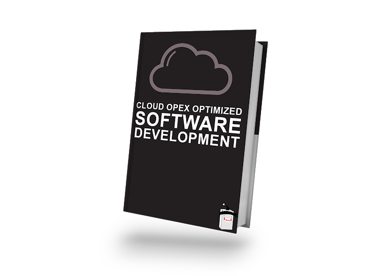

This Toy Programming language of this TPL
Cloud Opex Optimized Software Development

This toy programming language that every kind could master and play with it controlling smart device and virtual environment building and assembling things that help them learn and be smarter while growing if this not the goal of someone who has kids, I don't know what other goal this person should have. If you don't have kids it would be better if you have also this goal because it gives you a better future.
dissembling compilers and making them architecturally up to date reminded me of this programming language to design, it will help to master grammar for this like I would like to master the grammar of this language I am using to write this piece of text or article. Please, give this kind of piece of text the name you want because I am not sure that they are what I used to call them, articles. Journalism is something that I am interested in ant this could make me believe that each of us is one but those who have endured this journey that gave them this journalistic grade at university really deserve a particular treatment. Will they accept me like one.
Highlighting what I am doing by writing about it. There is about an interesting work, project idea about programming language and compiler. I have just chosen to build this. If an algorithm can write interesting pieces of text we will soon read data-driven books written by AI authors but it is not about dump publishing but publishing interesting books that will help the reader have a leap forward and achieve goals with complete understanding and ease of action. This programming language and this compiler I am talking about will likely be in this data-driven book below and another interesting tech innovative and cost-efficient solutions. If you want to be part of those who will read it and use the datasets and algorithms. You can use this form.
